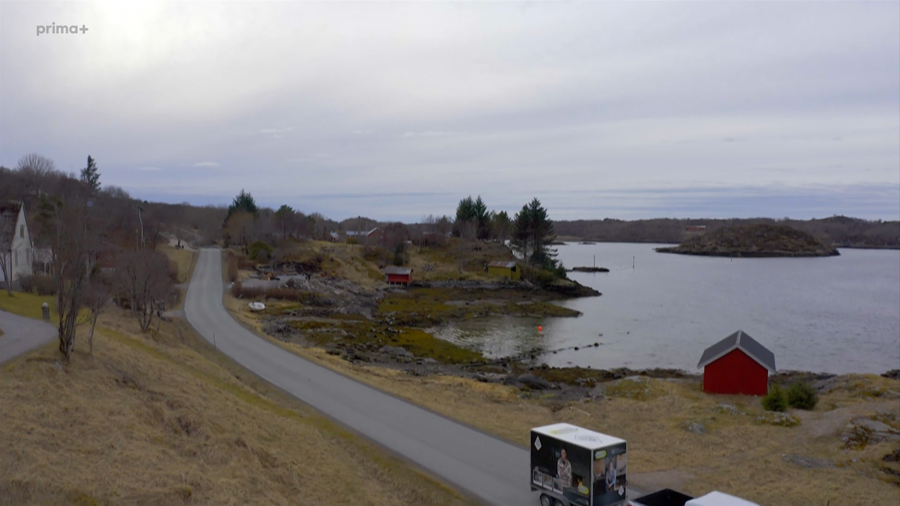

BPS se zjistí až při spuštění příkazu v terminálu.
Příkaz použije 80 % datového toku vstupního videa pro HEVC. Hodnota sama o sobě nezaručuje konkrétní kvalitu.
Rozmazání v náhledu je orientační; výsledný obraz zpracuje FFmpeg.
